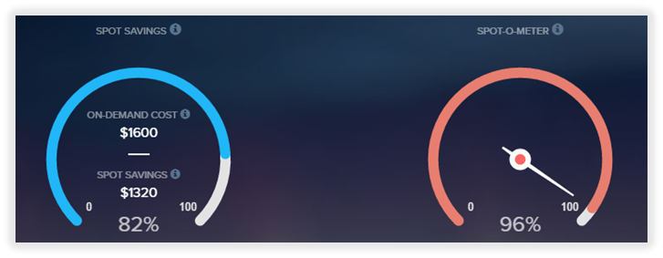

Social Sentiment Analysis using Hive on Hadoop is 82% cheaper with cmpute
Sentiment Analysis
Social Sentiment analysis is a powerful new tool being used by economists, social scientists and data analysts to help support new theories and descriptive understandings of the behaviours and driving forces of global-scale social systems. The GDELT Project monitors the world's news from nearly every corner of every country in over 100 languages and identifies the people, locations, organizations, themes, emotions, events driving our global society.
The Challenge
- - Hive system had to be built to periodically query and monitor the dyadic interactions and the Goldstein scale
- - Make processing extremely cost efficient and repeatable with little to no IT overhead
Solutions

- - EMR cluster initially configured in AWS Management console was used in cmpute to create the Hive Job.
- - cmpute’s Instance Smart Sizing and Spot Instance management to increase job efficiencies and reduce transcoding cost
- - cmpute’s infinite scale parallelization helps to process each profile in parallel giving faster transcode times and quick time-to-market
Results
With 96% of the instances running on Spot, cmpute helped save 82% over on-demand AWS costs with no IT overhead